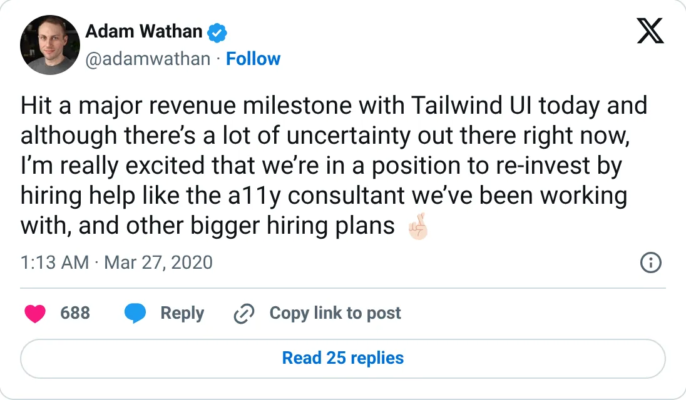

Don't build this
Tailwind UI (Tailwind Labs)
UI kits that needed documentation traffic. The traffic left.
~$2M in its first ~5 months (2020); revenue down ~80% by Jan 2026
Should you build this
Tailwind UI sold component kits and lived off people visiting the docs. The $2M figure is launch cash from 2020, not a monthly rate. In January 2026 Adam Wathan said revenue was down about 80% and most of the engineering team was laid off, because AI answers replaced the documentation. Don't build a product that needs strangers to keep reading your docs.
Cited from the captured posts, shown below: the key post (Mar 27, 2020) is the source for “"Hit a major revenue milestone with Tailwind UI today"”.
Posts this is based on

"Hit a major revenue milestone with Tailwind UI today"
Open on X
What the product is
Paid UI component and template kits (now Tailwind Plus) that fund the open-source Tailwind CSS framework.
⚠ A cautionary tale: AI coding tools cut documentation traffic, and revenue fell about 80%.